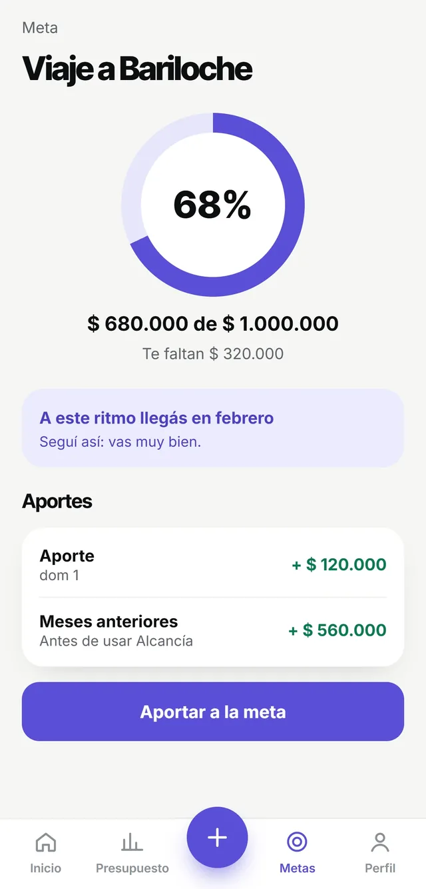

Concept project Fintech, mobile app
Alcancía
What is left for the month, budgets and one goal, with no spreadsheets and no guilt.



Project overview
- Industry
- Personal finance
- Product
- Mobile app for young people
- My role
- Research, UX, UI and prototype
- Timeline
- 4 weeks
- Tools
- Figma, FigJam, JavaScript
- Status
- Concept, with a working prototype. Not launched
Self-initiated, with no client. Research is secondary (benchmark, proto-persona, journey map and behavioral economics principles); amounts and targets are fictional. The prototype was validated with a heuristic evaluation; user testing is planned. The app interface is in Spanish, the language of its market.
In one minute
Problem
Many young people track spending in spreadsheets or not at all. Banking apps list transactions but don’t help anyone decide.
Approach
One clear number per screen, an expense logged in two taps and tips that come with a way out. Behavioral principles shaped the copy as much as the layout.
Outcome
A working prototype that recalculates with every expense, and a design system with tabular figures and states that don’t rely on color.
01Context
The money goes, and nobody's quite sure where.
Many young people track expenses in spreadsheets or not at all. Banking apps list transactions, but they don't help people understand where the money goes or save towards a goal.
- Know how much they can spend today
- Save for something specific
- Not feel judged for their spending
- Frequent use, not once a month
- Retention beyond the first month
- Trust to handle sensitive data
- No bank connection in v1: entry is manual
- Inflation: amounts change month to month
- Income that isn't always fixed
02Research
Why spreadsheets get abandoned.
I compared the tools people already use and added behavioral economics principles to understand why the habit is hard to keep.
Tools compared
Spreadsheet, bank app, digital wallet, budgeting app and the proposal.
Proto-persona
First job, saving for a trip, unsure where the money goes.
Behavioral principles
Applied to motivate without guilt.
Benchmark
| Feature | Spreadsheet | Bank app | Digital wallet | Budgeting app | Alcancía |
|---|---|---|---|---|---|
| What's left to spend | With formulas | Balance only | Balance only | ||
| Category budgets | Manual | ||||
| Savings goals | Manual | Term deposit | |||
| Log an expense in seconds | Automatic | Automatic | Many fields | ||
| Personalized tips | Generic | ||||
| Built for inflation | If you build it |
Swipe the table to see every column →
Takeaway: budgeting apps have the features, but logging takes too much effort and they're designed for stable economies. Wallets track automatically but don't help people plan.
Proto-persona
Lucas, 24
First salaried job · saving for a trip to Bariloche"I get paid, and by mid-month I've no idea where the money went. I save whatever's left, which is never anything."
Goals
- Save $1,000,000 for the trip
- Know how much he can spend going out
Frustrations
- Has abandoned three spreadsheets
- Apps make him feel guilty
Habits
- Pays almost everything with a digital wallet
- Checks his balance several times a week
Journey map · a month in Lucas's life
Feels flush and pays fixed bills.
Coffees, delivery and transport, untracked.
Checks his balance and can't see how it dropped so much.
Cuts back on going out and leans on the credit card.
Wanted to put something aside for the trip: nothing's left.
Swipe to see all five stages →
Behavioral economics, applied
Named money is protected
Goals have a name and purpose ("Trip to Bariloche"), not generic "savings".
Save first, not last
The goal contribution is suggested on payday, when it hurts least.
"Available" instead of "spent"
Showing what's left guides today's decision; what's spent only creates guilt.
Advice, not a scolding
Every alert comes with a concrete action and its effect on the goal.
03Definition
One clear number at a time.
How might we…?How might we help young people understand where their money goes and save towards a goal without feeling guilty?
Design principles
One number per screen
Each screen answers one question, with one hero figure.
Log in two taps
Amount and done: the category is suggested.
Nudge, don't scold
Friendly language and always a next step.
MVP MoSCoW prioritization
- Monthly available
- Quick entry
- Category budgets
- One goal
- Tips
- Monthly summary
- Payday reminder
- Multiple goals
- Shared goals
- Bank connections
- Investing
04Architecture
Logging is always one tap away.
If logging is hard, the habit breaks. That's why the "+" button lives in the middle of the bottom bar, on every screen.
Sitemap
- Alcancía
- Home available · goal · transactions
- + Log expense · income
- Budget categories · monthly summary
- Goals
- Detail and contributions
- New goal
- Profile income · categories · alerts
Main flow: logging an expense
05Wireframes
Hierarchy before color.
Low-fidelity wireframes to decide which figure leads each screen. The numbers mark the decisions.
- One hero figure: what's available.
- The goal, visible from day one.
- Central "+" to log from any screen.
- The amount, large and centered.
- Suggested category already selected.
- Built-in keypad, no system keyboard.
- Monthly total with days remaining.
- One bar per category, spent over limit.
- Space for the tip of the moment.
- Circular progress: readable at a glance.
- Projection: when you'll get there at this pace.
- Contribute as the main action.
06Decisions
Less data, better decisions.
The first versions showed everything. Reviewing them against the proto-persona and behavioral principles, I cut back.
Spending pie chart on home
Lots of colors and percentages, and no answer to "can I spend today?".
One number: available this month
With its change vs. last month as a percentage, which says more than the amount under inflation.
"You're over budget"
A red alert that scolded and didn't say what to do.
Red bar + a tip with a way out
"Cut going out by 15% and you'll reach your goal in January." Color warns; text suggests.
Five-field form
Amount, category, date, payment method and note. Nobody would fill it in while queuing for coffee.
Amount and suggested category
Today's date by default; note and payment method optional and collapsed.
07Design system
Friendly, but serious about numbers.
A violet that breaks from traditional banking, status colors used only to signal, and tabular figures so amounts line up.
Color
#5B4FD8White 5.91:1 · AA#4A3FC0Text 7.02:1 · AAA#0C7A50White 5.36:1 · AA#C8362BWhite 5.23:1 · AA#F5A524With ink 9.46:1#ECEBFDDeep violet 6.47:1Typography
Components
Accessibility
- States don't rely on color alone: exceeded amounts are also stated in text
- Explicit + and − sign on every transaction
- AA contrast for text on violet
- Amounts read in full by screen readers ("three hundred twelve thousand pesos")
- Option to hide amounts in public places
- Numeric keypad with 48 px keys
08Final UI
Your numbers, at a glance.
The five key screens in high fidelity.
Presupuesto
Noviembre · quedan 16 díasViaje a Bariloche
Octubre, en corto
09Validation
Heuristic evaluation of the prototype.
Before taking it to users, I evaluated the interactive prototype against Nielsen's 10 heuristics and walked through the main tasks step by step: logging an expense, going over a category, deleting a transaction, contributing to the goal and hiding amounts. Each issue has a severity rating, and I fixed the most serious ones in the prototype.
Findings
| # | Issue and fix | Heuristic | Sev. | Status |
|---|---|---|---|---|
| 1 | The suggested category could end up off-screen: you couldn't see which category would be saved.The row scrolls to the selected category and the text names it ("Sugerimos Transporte"). | H1 · Visibility of system status | 3 | Fixed |
| 2 | Deleting a transaction couldn't be undone.The "Deleted" notice now has "Undo". | H3 · User control and freedom | 2 | Fixed |
| 3 | Goal contributions only offered fixed amounts.A field for any amount was added, with validation. | H7 · Flexibility and efficiency | 2 | Fixed |
| 4 | Budget limits can't be edited.Pending for the next iteration. | H3 · User control and freedom | 2 | Pending |
| 5 | With "Hide amounts" on, the bars still show proportions.Pending: check with users whether this matters to them. | H5 · Error prevention | 1 | Pending |
Swipe the table to see every column →
Severity on Nielsen's scale: 1 cosmetic, 2 minor, 3 major, 4 catastrophic. I found no severity-4 issues.
Before and after
The suggested category could end up off-screen: you couldn't see which category would be saved.
The row scrolls to the selected category and the text names it ("Sugerimos Transporte").
Goal contributions only offered fixed amounts.
A field for any amount was added, with validation.
Next step: user testing
An expert review finds known usability issues, but it doesn't measure how real people behave. The next step is a moderated test with the fixed prototype, using these targets and tasks:
User test tasks
| # | Task | Success if… |
|---|---|---|
| 1 | You bought a $3,200 coffee: log it. | Saves it in under 10 s with the right category. |
| 2 | How much is left for going out this month? | Finds it in Budget and understands it's exceeded. |
| 3 | Create a goal to replace your phone. | Fills in name, amount and date unaided. |
| 4 | When will you reach the trip at this pace? | Reads the projection in the goal detail. |
Participants: 5 people aged 20–30, with their own income, who have tried tracking expenses before.
10Learnings
What I'm taking away.
- In finance, tone is part of the design: the same alert motivates or drives people away depending on wording.
- Designing for an inflationary context changes what gets compared and how.
- Removing information was the decision that most improved clarity.
- Usability test and a four-week diary study.
- Import digital wallet transactions to reduce manual entry.
- Shared goals for couples or friends travelling together.